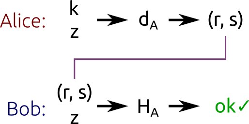

椭圆曲线加密：ECDH 和 ECDSA¶
原文： Key pair generation and two ECC algorithms: ECDH and ECDSA
椭圆曲线参数（Domain parameters）¶
椭圆曲线加密算法工作在 有限域上的椭圆曲线 的循环子群上，曲线的参数可以用一个六元组 \((p, a, b, G, n, h)\) 表示：
素数 \(p\) 指定有限域的大小。
椭圆曲线的系数 \(a\) 和 \(b\) 。
子群的 基点 \(G\) 。
子群的 序 \(n\) 。
子群的 cofactor \(h\) 。
椭圆曲线加密（Elliptic Curve Cryptography）¶
椭圆曲线的核心原理如下：
私钥（private key） 是从 \({1, \cdots, n - 1}\) 中随机选择的一个数 \(d\) （\(n\) 是子群的序）。
公钥 是点 \(H = dG\) （\(G\) 是子群的基点）。
根据循环子群的特性，知道 \(d\) 和 \(G\) 可以很容易的计算得到 \(H\)，相反，知道 \(H\) 和 \(G\) 想要得到私钥 \(d\) 非常的困难，因为这是一个离散对数问题。
椭圆曲线常用的有以下两个算法：用于加密的 ECDH (Elliptic curve Diffie-Hellman) 算法，用于计算数字签名的 ECDSA (Elliptic Curve Digital Signature Algorithm) 算法。
ECDH 加密算法¶
ECDH 是 Diffie-Hellman 算法 的一个变种，它本质上是 密钥协商算法 ，只负责通信双方密钥的生成和交换，如何使用这个密钥加密数据取决于用户，和 ECDH 算法无关。
假设 Alice 和 Bob 想要交换信息，下面是使用 ECDH 交换密钥的过程：
首先，Alice 和 Bob 各自生成自己的公钥和私钥。设 Alice 的私钥为 \(d_A\) ，公钥 \(H_A = d_AG\)，Bob 的私钥 \(d_B\)，公钥 \(H_B = d_BG\) 。两人使用同样的曲线参数。
Alice 和 Bob 在不可靠的信道上交换它们的公钥。中间人即使监听获得了两人的公钥 \(H_A\) 和 \(H_B\) ，也没办法解出两人的私钥 \(d_A\) 或 \(d_B\) ，因为需要解离散对数问题。
Alice 计算 \(S = d_AH_B\) （使用自己的私钥和 Bob 的公钥），Bob 计算 \(S = d_BH_A\) （使用自己的私钥和 Alice 的公钥）。这个 \(S\) 是两人之间“共同的秘密（shared secret）”。
通过公钥 \(H_A\) 和 \(H_B\) 很难解出 \(S\) 来，这个叫做 Diffie-Hellman 难题。即：
给定三个点 \(P\)， \(aP\) 和 \(bP\)，求 \(abP\) 。
或者等价的（原始 Diffie-Hellman 算法里用的）：
给定三个整数 \(k\)， \(k^x\) 和 \(k^y\)，求 \(k^{xy}\) 。

Diffie-Hellman 难题更详细的可以参见可汗学院的这个视频： Public key cryptography - Diffie-Hellman Key Exchange (full version)
解决椭圆曲线的 Diffie-Hellman 难题需要解决离散对数难题，所以很难求解。
Alice 和 Bob 获得共同的秘密 \(S\) 后，就可以使用对称加密来交换数据了。
比如，可以使用 \(S\) 的 \(x\) 坐标作为密钥，使用 AES 或者 3DES 之类的算法来加密信息。TLS 的方式比这个稍微复杂一点，它用的是 \(x\) 坐标再加上一些和连接相关的数值后计算的一个 hash。
ECDHE 加密算法¶
ECDHE 指的是 Ephemeral（临时的） ECDH 算法，也就是说 ECDH 加密算法交换的密钥只是临时的，不是 静态 的。
比如 TLS 就使用了 ECDHE 算法，客户端和服务端每次建立连接的时候都会生成并交换新的公私钥。
ECDSA 签名算法（Signing with ECDSA）¶
ECDSA 签名算法的使用场景是这样的：Alice 要发送一个消息给 Bob，为了让 Bob 相信这个信息确实是她发出的， Alice 使用自己的私钥 \(d_A\) 给消息生成一个数字签名并和消息一起发给 Bob，Bob 收到后可以使用 Alice 的公钥 \(H_A\) 验证这个消息是否确实是 Alice 所发。
这里两人依然使用同样的椭圆曲线参数。ECDSA 是 Digital Signature Algorithm 在椭圆曲线上的应用。
ECDSA 是用消息的 hash 来生成签名的，这个 hash 函数我们可以自己定（但最好使用一个 安全 hash 算法 ）。hash 值会被截断到和子群的序 \(n\) 同样的 bit 长度。记这个截断后的整数值为 \(z\) 。
ECDSA 算法签名的过程如下：
从 \({1, \cdots, n - 1}\) 随机取一个数 \(k\) （\(n\) 是子群的序）。
计算点 \(P = kG\) （\(G\) 是子群的基点）。
计算 \(r = x_P \bmod n\) （\(x_P\) 是 \(P\) 点的 \(x\) 坐标）。
如果 \(r = 0\) 换一个 \(k\) 后重试。
计算 \(s = k^{-1}(z + rd_A) \bmod n\) （其中 \(d_A\) 是 Alice 的私钥， \(k^{-1}\) 是 \(k\) 的乘法逆元。
如果 \(s = 0\)，换一个 \(k\) 后重试。
\((r, s)\) 对就是生成的数字签名。
简言之，这个算法生成一个密钥 \(k\) ，然后使用点的乘法将其藏入 \(r\) 中（乘法容易，反过来就是对数问题，求解很困难），最后使用公式 \(s = k^{-1}(z + rd_A) \bmod n\) 将 \(r\) 和消息的 hash \(z\) 绑定。
验证签名（Verifying signatures）¶
Bob 收到消息后，同 Alice 计算签名时算消息的 hash 的方法一样计算收到的消息的 hash 值 \(z\) 。然后：
计算 \(u_1 = s^{-1}z \bmod n\) 。
计算 \(u_2 = s^{-1}r \bmod n\) 。
计算点 \(P = u_1G + u_2H_A\) 。
如果 \(r = x_P \bmod n\) ，那么说明这条消息确实是 Alice 所发。
算法证明（Correctness of the algorithm）¶
根据公钥定义 \(H_A = d_AG\) （\(d_A\) 是私钥），我们可以得到：
根据上面 \(u_1\) 和 \(u_2\) 点定义：
为了简洁，上面的公式都省略了“ \(\bmod n\)”。
又： \(s = k^{-1}(z + rd_A) \bmod n\) ，两边乘上 \(k\) 再除 \(s\) 得到： \(k = s^{-1}(z + rd_A) \bmod n\) 。将上面 \(P\) 公式里的 \(s^{-1}(z + rd_A)\) 替换为 \(k\) 得到：
这个公式和生成签名第 2 步里的公式一模一样，也就是生成和验证的时候我们可以计算得到相同的点 \(P\)。证明完毕。
ECDSA 使用的密钥 \(k\) 应该不可预测，如果我们所有的签名使用同样的 \(k\) 或者使用的随机数生成器可预测，攻击者可以有办法破解得到私钥。